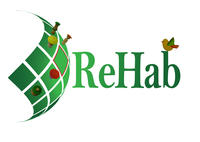
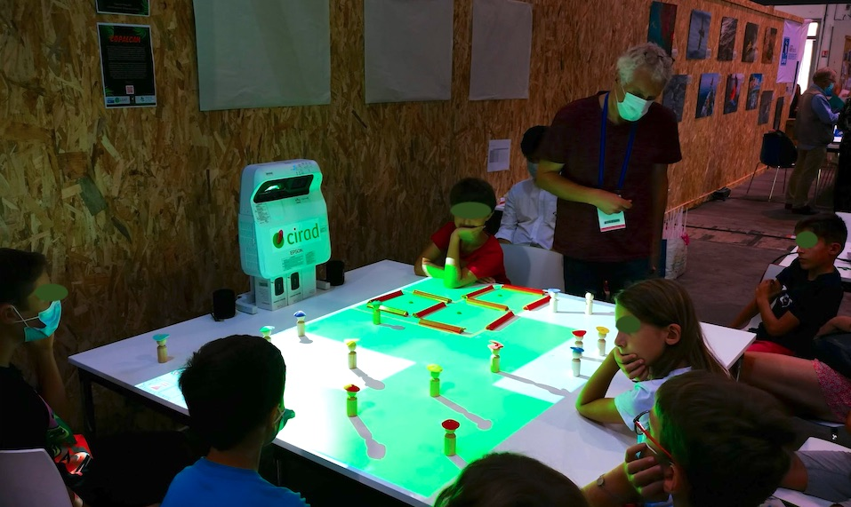
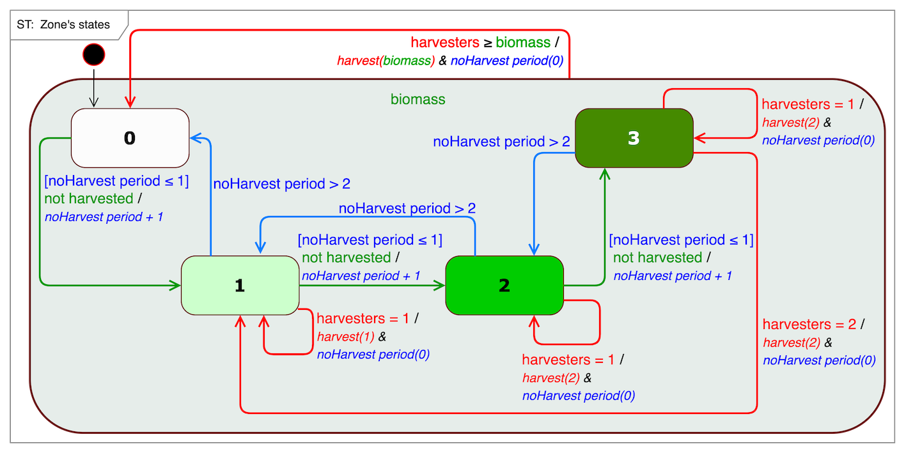
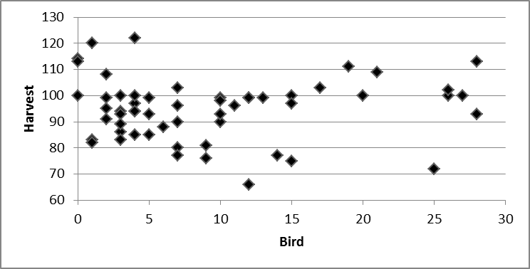

ReHab

Re(source)Hab(itat), computer-assisted role-playing game
ReHab is a computer-assisted role-playing game aiming at fostering the importance of communication, through experiential learning, in the context of renewable resources management and conservation.
Motivation for its creation
It is often assumed in natural resources management that communication helps solving the ‘tragedy of the commons’ by way of shared knowledge and better coordination. ReHab is a role-playing game, both cooperative and competitive, exploring the role of knowledge production and communication for the conservation and management of natural resources through experiential learning.ReHab pitches players as Harvesters or Rangers in an abstract landscape representation where a resource is distributed in discrete units of Biomass. The landscape is also a nesting and breeding ground for a protected migratory Bird. The Rangers’ task is to maximize Bird reproduction by creating protected areas, while Harvesters have to collect Biomass, their only source of income. Rules about biomass regeneration, distribution amongst harvesters, and bird reproduction are not disclosed to the players. A typical game session includes two successive scenarios: without communication between players then with communication. A final collective debriefing brings out the level of understanding of the hidden rules, the individual and collective strategies and how these influenced the game's outcomes.
In most cases communication improves the outcomes for both roles, Harvesters and Rangers, even though players construct and articulate rational decisions based on limited or even flawed understandings of the rules. This suggests that, in the absence of enforcement mechanisms, trust and communication prevail over knowledge and understanding when it comes to managing natural resources and resolving trade-offs between conservation and development.

Description and specificity
The game board is composed of 20 cells, each with a biomass level between 0 and 3. It is this biomass that the harvesters must collect to survive.
In addition, this area is home to an endangered migratory bird species. Birds move to nesting sites each season. Suitable nesting sites must contain sufficient biomass (level > 1). Breeding is successful (1 or 2 chicks) as long as nesting boxes (and their vicinity) are not disturbed by harvesters.
The dynamics of the biomass evolves according to the following rules:

- Get the software ready to use on your laptop: a Windows computer, unzip ReHab-exe.zip and then simply double-clic on ReHab.exe
- Install the model on your computer:
- On Windows, download and unzip ReHab-exe.zip (14 Mo), then double-click on ReHab.exe, or
- If Cormas is already installed, download the model code ReHab.zip.
- Short introduction to the game (general briefing): ReHab_presentation_en.pdf
- Players' information sheets: ReHab_info_en.pdf
- Players' decisions and results sheets: ReHab_decisionSheets_en.pdf
- The rules of the underlying model (to be revealed when the session is over...): ReHab_UML_en.pdf
- For the debriefing, to compare your session (scenario with
communication) to all (56 as of October 2016) previous sessions:
 - For more information, contact the authors.